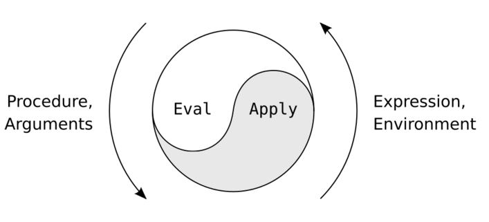

A few weeks ago, an interesting HN thread caught my eye. When implementing an interpreter for a programming language, Lisp is often cited as a particularly attractive example due to its simplicity. Why is that?
I've really enjoyed implementing Lisp interpreters and compilers in the past [1], so I'd like to reflect a bit on this topic. But first, an important clarification: when I say "Lisp" I mean a family of languages, some of them minimal (like the original Lisp 1.5 or older versions of Scheme), and some very large and complicated (like Common Lisp, Racket or Clojure).
So why are interpreters for Lisp relatively easy to write? The answer is twofold: (1) it's easy to write a Lisp frontend and (2) it's easy to write a Lisp backend.
Frontend - uniform syntax
Uniform syntax is one of Lisp's greatest strengths. It's what makes parsing the language simple, and also enables powerful macro systems that are very common in real-life Lisp implementations.
Lisp programs consist of lists, which have this structure:
( item item ... )
Where ( and ) are the literal paren characters, and each item is potentially a nested list. There is also a small number of special tokens a Lisp supports, such as a single quote for symbols and double quotes for strings.
As far as the lexer goes, it has to recognize only a handful of special characters. The parser only has a single rule to parse a list recursively; there's no operator precedence to worry about; in fact, there are no operators at all:
(minus x y)
Is parsed exactly the same as:
(- x y)
In the latter, - is just another symbol. The interpreter (backend) may attribute some special semantics to it, but as far as the parser is concerned this is a non-issue. Lisps are almost universally dynamically typed, which simplifies the parser further.
A simple parser is great, but that's not all. Parsers typically produce some sort of parse tree or AST, which then serves as input to the interpreter or the compiler backend. In Lisp, an AST is trivial: it's just the nested representation of the parsed input list.
Back to our (minus x y) example; its "AST" representation is a tree node with minus at the root and x and y as child nodes. This is similar to the AST nodes produced from expressions in "standard" programming languages, but in Lisp everything is a list / expression. So there's no need to design special AST data structures and map the parser's output to them - it emerges out of the structure of Lisp automatically. In fact, Lisp programs are famously just Lisp data, which is why in Lisp macros are not a special language but rather just Lisp code that manipulates other lisp code.
Backend - meta-circular evaluator
Lisp was designed to be simple to interpret (at least in a straightforward way, without worrying about efficiency). This goes back all the way to John McCarthy's 1960 paper titled Recursive Functions of Symbolic Expressions and Their Computation by Machine. The clearest formulation I could find for this is in Paul Graham's 2002 essay The Roots of Lisp. Here's the entire Lisp interpreter:
(defun eval. (e a)
(cond
((atom e) (assoc. e a))
((atom (car e))
(cond
((eq (car e) 'quote) (cadr e))
((eq (car e) 'atom) (atom (eval. (cadr e) a)))
((eq (car e) 'eq) (eq (eval. (cadr e) a) (eval. (caddr e) a)))
((eq (car e) 'car) (car (eval. (cadr e) a)))
((eq (car e) 'cdr) (cdr (eval. (cadr e) a)))
((eq (car e) 'cons) (cons (eval. (cadr e) a) (eval. (caddr e) a)))
((eq (car e) 'cond) (evcon. (cdr e) a))
('t (eval. (cons (assoc. (car e) a) (cdr e)) a))))
((eq (caar e) 'label)
(eval. (cons (caddar e) (cdr e)) (cons (list (cadar e) (car e)) a)))
((eq (caar e) 'lambda)
(eval. (caddar e) (append. (pair. (cadar e) (evlis. (cdr e) a)) a)))))
(defun evcon. (c a)
(cond ((eval. (caar c) a)
(eval. (cadar c) a))
('t (evcon. (cdr c) a))))
(defun evlis. (m a)
(cond ((null. m) '())
('t (cons (eval. (car m) a) (evlis. (cdr m) a)))))
This code assumes that there are a few more primitives defined in the language, using lower-level primitives:
(defun pair. (x y)
(cond ((and. (null. x) (null. y)) '())
((and. (not. (atom x)) (not. (atom y)))
(cons (list (car x) (car y))
(pair. (cdr x) (cdr y))))))
(defun assoc. (x y)
(cond ((eq (caar y) x) (cadar y))
('t (assoc. x (cdr y)))))
(defun null. (x) (eq x '()))
(defun and. (x y)
(cond (x (cond (y 't) ('t '())))
('t '())))
(defun not. (x)
(cond (x '())
('t 't)))
(defun append. (x y)
(cond ((null. x) y)
('t (cons (car x) (append. (cdr x) y)))))
It also relies on several "built-ins": quote, atom, eq, car, cdr, cons, and cond.
The built-ins cons, car and cdr are the basic tools for working with the list data structure: cons creates a pair with a head and tail; car grabs the head and cdr grabs the tail. Compound accessors like cadr and caddar are a combination of the latter two, and can be trivially constructed using them as primitives. For example, (cadr x) is the same as (car (cdr x)), meaning the second element from the list. Recall that Lisp's lists represent nested trees - so these primitives are just convenience helpers to grab specific children and other descendants from a given node.
I highly recommend reading The Roots of Lisp for all the details - it's short and very readable. What's important for our goal here is to note how small the evaluator is, and how little supporting infrastructure it requires.
The one issue folks may run into when implementing a Lisp interpreter in a systems programming language is the need for some sort of automatic memory management, which is assumed by the Lisp specification (there's a cons to build new lists, but no explicit way to free up this memory). While Bob's first interpreter is in Python, I specifically wrote another version in C++ to practice implementing a GC for Lisp.
| [1] | The most serious implementation is Bob, which is a whole suite of interpreters and compilers for Scheme, written in Python and C++. There's also a fairly functional series of interpreters and compilers while working through SICP. Finally, another series of interpreters while working through the EOPL book. |